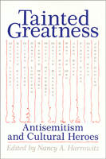

<body bgcolor="#FFFFFF" text="#000000" link="#0000FF" vlink="#CC0000" alink="#CC0000"><center><hr width="350" size="1" align="center" noshade>Debates about the significance of anti-semitism in the lives and work of intellectual figures<hr width="350" size="1" align="center" noshade><p><a href="https://cdcshoppingcart.uchicago.edu/Cart/ChicagoBook.aspx?ISBN=9781566391535&&PRESS=temple" target="_top">Buy this book!</a> | <a href="https://cdcshoppingcart.uchicago.edu/Cart/Cart.aspx?PRESS=temple" target="_top">View Cart</a> | <a href="https://cdcshoppingcart.uchicago.edu/Cart/Cart.aspx?PRESS=temple" target="_top">Check Out</a></p><p></p></center><!--none//--><h1>Tainted Greatness</h1>
<H2>Antisemitism and Cultural Heroes</H2>
<h3>edited by Nancy A. Harrowitz</h3>
<P>cloth 1-56639-153-9 $80.50, May 94, <FONT COLOR=#990033>Out of Stock Unavailable</FONT>
<br>paper 1-56639-161-X $36.95, May 94, <FONT COLOR=#990033>Available</FONT>
<BR> 328 pp
6x9
</P><p>In recent years, a number of intellectual figures behave been exposed as either proponents of or otherwise tainted by an association with antisemitism. Nancy Harrowitz has assembled a collection of powerful essays that examine the concept of "taintedness" from the perspective of a wide range of disciplines, including philosophy, religion, literature, and intellectual history.
<p>Noting the influence of such important cultural figures as Martin Luther, Gerhard Kittel, Mircea Eliade, Carl Jung, Sigmund Freud, Cesare Lombroso, Martin Heidegger, Ezra Pound, Paul De Man, and Jean Genet, the contributors contemplate the volatile issues surrounding each figure's work and life. In an effort to understand how the phenomenon of "tainted greatness" is possible, they ask whether the revelation of prejudice devalues the work of these regarded as intellectual heroes? What it means to continue to revere intellectual greatness despite the presence of antisemitism? Is antisemitism an inextricable part of the figures' work as much as part of their lives? And finally, is it the concept of heroism or "greatness" itself, which invites or even generates the notion of taintedness, that needs to be re-examined?
<BR>&nbsp;<h2>Excerpt</h2><P>Excerpt available at <a href="http://www.temple.edu/tempress">www.temple.edu/tempress</a></p>
<BR>&nbsp;<h2>Contents</h2><P>
<p>Acknowledgments
<br>Introduction: &#150 Nancy A. Harrowitz
<p><b>Part I: Theology and Religion</b>
<br>1. Tainted Greatness: Luther's Attitudes toward Judaism and Their Historical Reception &#150 Carter Lindberg
<br>2. "Familiarly Known as Kittel": the Moral Politics of the <I>Theological Dictionary of the New Testament</I> &#150 Alan Rosen
<br>3. Mircea Eliade: Romanian Fascism and the History of Religions in the Untied States &#150 Adriana Berger
<br>4. Ungilding Spain's "Golden Age" &#150 Shifra Armon
<p><b>Part II: From Psychoanalysis to Philosophy</b>
<br>5. Psychoanalysis and Anti-Semitism: Tainted Greatness in a Professional Context &#150 Sander L. Gilman
<br>6. Lombroso and the Logic of Intolerance &#150 Nancy A. Harrowitz
<br>7. Herzl, Wagner, and the Ironies of "True Emancipation" &#150 Steven Beller
<br>8. Reading Heidegger: Destruction, Thinking, Return &#150 Robert Gibbs
<br>9. Italian Heidegger Affairs &#150 Renate Holub
<p><b>Part III: Literature and Theory</b>
<br>10. Gray Zones: Vichy, Maurice Blanchot, and the Problem of Aftereffect &#150 Steven Ungar
<br>11. "Jewspapers": Ezra Pound, Poststructuralism, and the Figure of the Jew &#150 Paul Morrison
<br>12. De Man and Idolatry &#150 William Flesch
<br>13. Tainted Greatness: Depravity and Sacrifice in Jean Genet &#150 Edith Wyschogrod
<p><b>Part IV: Jewish Reflections</b>
<br>14. Tainted Artists/Tainted Texts &#150 Reflections from the Rabbinic Sources &#150 Joseph Polak
<br>15. The Remembrance of Amalek: Tainted Greatness and the Bible &#150 Joshua Cohen
<p>Afterword &#150 Joseph Polak
<br>Notes on the Contributors
<br>Index
</P><BR>&nbsp;<H2>About the Author(s)</H2>
<P><b>Nancy A. Harrowitz</b>, Assistant Professor of Italian Literature at Boston University, is the author of <I>Antisemitism, Misogyny, and the Logic of Cultural Difference: Cesare Lombroso and Matilde Serao</I> and co-editor (with Barbara Hyams) of <I><a href="1064_reg.html" target="_top">Jews and Gender: Responses to Otto Weininger</a></I> (Temple).</P>
<P>Contributors: Shifra Armon, Steven Beller, Adriana Berger, Joshua Cohen, William Flesch, Robert Gibbs, Sander Gilman, Renate Holub, Carter Lindberg, Paul Morrison, Joseph Polak, Alan Rosen, Steven Ungar, Edith Wyschogrod, and the editor.</P>
<BR><H2>Subject Categories</H2>
<p><A HREF="/tempress/philosophy.html" TARGET="_top">Philosophy and Ethics</a>
<BR><A HREF="/tempress/jewish.html" TARGET="_top">Jewish Studies</a>
</p>
<BR><h2 class="inpageheading">In the series</H2>
<P><I><a href="http://www.temple.edu/tempress/themes_philo.html" onMouseOver="window.status='Click for other books in this series!'; return true;" onMouseOut="window.status=''; return true;" target="_top">Themes in the History of Philosophy</a></i>, edited by Edith Wyschogrod.
</p><p><I>Themes in the History of Philosophy</I>, edited by Edith Wyschogrod, will serve as a collection of outstanding work in the history of philosophy. It will include interpretations of significant themes, problems, and tendencies in the history of thought; studies of important thinkers, schools, and movements; and inquiries into the relation of previous philosophies to literature, art, and history.</p>
<p align="center"><a href="https://cdcshoppingcart.uchicago.edu/Cart/ChicagoBook.aspx?ISBN=9781566391535&&PRESS=temple" target="_top">Buy this book!</a> | <a href="https://cdcshoppingcart.uchicago.edu/Cart/Cart.aspx?PRESS=temple" target="_top">View Cart</a> | <a href="https://cdcshoppingcart.uchicago.edu/Cart/Cart.aspx?PRESS=temple" target="_top">Check Out</a></p><p><font face="Arial" size="1"><a href="copyright.html" onMouseOver="window.status='Web Copyright Policy';return true;" onMouseOut="window.status=''" title="Web Copyright Policy">&copy;</a> 2015 <a href="http://www.temple.edu" target="new" onMouseOver="window.status='Link to Temple University home page';return true;" onMouseOut="window.status=''" title="Link to Temple University home page">Temple University</a>. All Rights Reserved. http://www.temple.edu/tempress/titles/1020_reg.html</font></p>